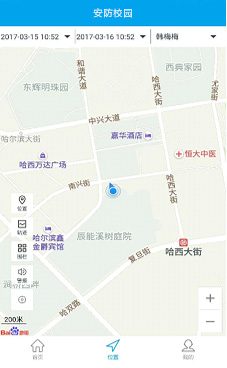

-
1家长扫描二维码进入安防校园APP的下载页面，根据智能手机的系统类型（Android版或iPhone版）下载家长端APP并完成安装。
-
2 安装完成后点击手机内APP进入平台登陆页面，输入家长的登陆账号（手机号）及初始密码123456。
-
3 登陆平台后，家长可使用的主要功能包括：家庭作业、班级公告、在线提问、位置查询、轨迹回放、孩子成绩、孩子考勤、在线请假、警报查询、通讯录、课程表等。
-

家庭作业
家长进入家庭作业页面后，可查看指定时间段内的各科作业内容。点击单条内容进入详细页面可查看到孩子所在班级、科目、教师、布置时间、完成时间、作业名称及内容。
-
班级公告
家长进入班级公告页面后，可查看指定时间段内的班级公告内容。点击单条内容进入详细页面可查看到孩子所在班级、公告发布时间、标题及内容。
-
在线提问
家长进入在线提问页面后，可查看指定时间段内家长提问过的内容。点击页面右上角的提问进入发布问题页面。选择孩子对应的授课教师名称，编辑标题及内容后点击发布按钮完成提问。点击单条内容进入提问页面可查看到教师的回复内容。
-
位置查询
家长进入位置查询页面后（或点击页面左下角定位图标 ），可查看到当前家长的位置信息（需要家长手机开启定位功能）。
- 
-
点击左侧位置图标可查看孩子的当前位置信息。
-
选择页面上方的开始时间、终止时间后，点击轨迹图标可查看孩子在对应时间段内的轨迹回放信息。
-
点击页面左侧的围栏图标可查看已设置好的孩子安全活动区域，当孩子位置超出围栏范围时，平台会发送警报提示至家长端APP。
-
孩子成绩
家长进入孩子成绩页面后，可选择某个月进行成绩查询。可查看孩子的各次考试时间、考试名称、总分及单科分数。
-
孩子考勤
家长进入孩子考勤页面后，可查看当月孩子的考勤情况。家长可选择某个月进行考勤查询，可查看孩子的考勤日期，姓名、签到类型、签到时间、状态，考勤时间段等信息。
-
在线请假
家长进入在线请假页面后，可查看孩子当月的请假情况。点击页面右上角的请假进入请假条的编辑页面。选择学生对应的授课教师名称、请假类型、请假时间、销假时间，编辑请假事由后点击发送按钮完成请假。提交假条后，假条状态为已提交，待老师审批通过后，状态为已批准。点击单条请假内容可查看教师的请假回复信息，点击删除请假按钮可删除假条。
-
警报查询
家长进入警报查询页面后，可查看孩子当月的学生卡警报情况。家长可选择某个月进行警报信息查看，可查看报警时间、报警类型、处理状态等信息。
-
- 我的孩子
家长在APP端右下角点击我的进入信息设置页面，点击我的孩子可查看到孩子的班级、出生日期、入学时间、学生卡IMEI号等信息。
-
SOS设置
点击SOS设置进入SOS号码设置页面，录入3个SOS求救号码。也可直接调入本机通讯录中的号码，点击确定完成SOS号码的设置。当孩子长按智能电子学生证SOS按键时，会对设置好的3个SOS号码进行轮播，直至电话接通。
-
白名单设置
点击白名单设置进入白名单号码设置页面，录入联系人名称和手机号码（最多10个号码）。也可直接调入本机通讯录中的号码，点击确定完成白名单号码的设置。除了已添加至白名单的手机号，其他手机号无法拨通该学生卡号码。
-
监听设置
点击监听设置进入监听号码的编辑页面，录入监听的联系人名称及手机号，点击确定完成添加监听号码的设置。需要监听时点击下方的拨打按钮完成对孩子的监听功能。
-
我的围栏
点击我的围栏进入学生围栏编辑页面，点击添加图标 ，在显示的地图上划定围栏区域后点击页面右上角的添加，录入围栏名称，点击确定完成添加电子围栏操作。
-
课程表
家长进入课程表页面后，可查看孩子的课程安排情况。
-
- 通讯录
家长进入通讯录页面后，可查看孩子所在班级授课老师的相关信息，点击教师姓名可查看教师手机号、学校名称、校区、部门、是否为班任、邮箱等信息。
-
设置
家长进入设置页面后，可查看平台的客服电话、版本信息，并对密码进行修改。
4 智能电子学生证功能特点
亲情通话
远程监听
精准定位
SOS紧急呼叫
轨迹回放
消费一卡通
电子围栏
自动屏蔽功能
感应式考勤
语音播报功能